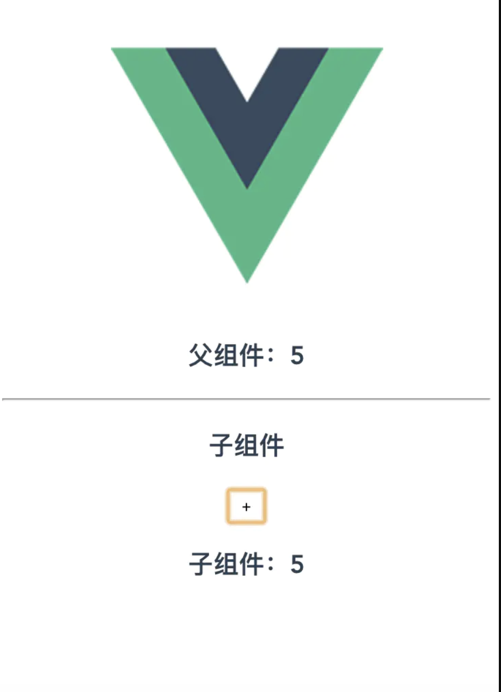

# Vue.js 中异常高效可用的。sync 修饰符
# 前言
在 Vue.js 中，父子组件 进行数据通信是一个老生常谈的话题，父级组件通过 Prop 向子组件传递数据，而子组件如何向父级组件进行数据交流沟通呢？
# 一、父子组件数据交互 - 第一种方式
# 业务需求：
子组件展示父组件传递的数值 num，点击子组件中的 + 号按钮，改变父组件 num 的值

页面效果展示
# 定义子组件
// Num.vue
<template>
<div class="num">
<h3>子组件</h3>
<button @click="plus">+</button>
<h3>子组件：{{ num }}</h3>
</div>
</template>
<script>
export default {
name: 'Num',
props: {
num: {
type: Number,
required: true
}
},
methods: {
/**
* 子组件是无法直接修改this.num，也无法直接修改父级组件的num
* 子组件$emit触发特定事件，父级组件监听对应事件，处理num
*/
plus () {
let num = this.$props.num
this.$emit('updateNum', ++num)
}
}
}
</script>
# 定义父组件
// Index.vue
<template>
<div class="index">
<h3>父组件：{{ num }}</h3>
<hr>
<num :num="num" @updateNum="updateNum"></num>
</div>
</template>
<script>
import Num from './Num'
export default {
name: 'Index',
data () {
return {
num: 1
}
},
components: {
Num
},
methods: {
// 更新num,传递到子组件的数据发生更新
updateNum (num) {
this.num = num
}
}
}
</script>
# 小结
使用以上方式进行父子组件通信是 Vue.js 的 标配：父组件通过 prop 向子组件传递数据，子组件使用 $emit 触发特定的事件 updateNum，父组件监听特定的事件 updateNum，进而更新父组件数据。功能确实实现了，但是在部分情况下不是那么完美
缺点： 考虑到 Num.vue 以后可能被多个组件复用，那么每个 父组件 中都需要监听处理 updateNum 事件，这样的话，对于父组件提升了其复杂性，对于子组件降低了其功能的独立性。
# 二、父子组件数据交互 - 第二种方式
完美解决方案：
.sync修饰符
Vue.js 本身就考虑到这种情况，提供了使用 .sync 修饰符，以实现更加便捷的从子组件更新父组件数据。
父子组件都要进行特定的配置
# 子组件
在原有的 Num.vue 中，需要修改以下位置代码：
// Num.vue
methods: {
plus () {
let num = this.$props.num
// 注意：此处触发的update:xxx事件，是特定的事件名称，xxx对应的是父组件中对应的变量num
this.$emit('update:num', ++num)
}
}
# 父组件
在原有的父组件 Index.vue 中，需要修改以下位置的代码：
// Index.vue
<template>
<!-- 其他代码 -->
<!--
调用Num组件，并传递num，此处一定要添加.sync修饰符
同时不用再监听任何其他事件
同时methods中添加的updateNum方法删除即可
-->
<num :num.sync="num"></num>
</template>
现在就实现了第一种方式中的相同功能！手动 微笑.gif
# 小结
其实 .sync 修饰符是相同于 Vue.js 自动帮你在 Index.vue 中的 num 组件调用上监听了 update:num 事件，并将传递的新值赋值到了变量 num 上，实现了子组件更新父组件的变量，进行了数据通信。
# 思维拓展
在很多的第三方框架中，如 element-ui，都使用了 .sync 修饰符的功能。比如 Dialog对话框 组件，调用时也是使用 .sync 方式传递变量 visible 的值，子组件 Dialog 在执行关闭对话框时，就执行了 this.$emit('update:visible', false)（详情可自行查看 elemnt-ui 源码）
# 后记
以上就是胡哥今天给大家分享的内容，喜欢的小伙伴记得收藏、转发、点击在看呦，欢迎多多留言交流...
胡哥有话说，一个有技术，有情怀的胡哥！京东开放平台首席前端攻城狮。与你一起聊聊大前端，分享前端系统架构，框架实现原理，最新最高效的技术实践！
长按扫码关注，更帅更漂亮呦！关注胡哥有话说公众号，可与胡哥继续深入交流呦！

胡哥有话说
文章来源：https://www.jianshu.com/p/efde1f54a367